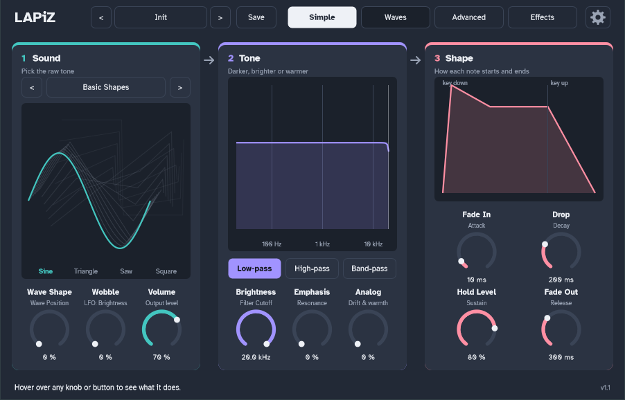

Every knob says what it does
Controls have a plain name on top and the real synth term underneath, so you can start making sounds right away and learn the proper words as you go. Hover over anything in LAPiZ and the help bar explains it.
- Wave Shape
- Wavetable Position
- Brightness
- Filter Cutoff
- Emphasis
- Resonance
- Analog
- Drift & warmth
- Fade In
- Attack
- Drop
- Decay
- Hold Level
- Sustain
- Fade Out
- Release
- Wobble
- LFO Amount
- Copies
- Unison Voices
- Grit
- Distortion
- Echo
- Delay
- Space
- Reverb
Four tabs, from simple to deep
Start on Simple. Everything else is there when you want it.

Simple
102 sounds to start from
LAPiZ sounds soft and a little magical, and sits in the middle of the mix: mostly pads and arps, plus plucks, keys, bells, gentle leads, textures and round basses. Pick one from the preset bar at the top of the window, change anything you like, then click Save to keep your version. Your presets are saved in Documents\LAPiZ\Presets and show up in every project.
Pad
- Warm Pad
- Glass Pad
- Ultramarine
- Gold Flecks
- Moonlit Haze
- Velvet Air
- Dream Bloom
- Starlit Drift
- Slow Tide
- Cloud Walk
- Lullaby
- Hazy Memory
- Enchanted Forest
- Crystal Cavern
- Twilight
- Aurora
- Floating
- Soft Focus
- Warm Blanket
- Spellbound
- Halo
- Pulse Pad
- Breathing Pad
- Sunrise
- Night Garden
- Distant Lights
- Mist
- Ember Glow
- Fairy Dust
- Velvet Glow
Arp
- Crystal Steps
- Music Box
- Starfall
- Bubble Pop
- Dewdrop
- Wand Spark
- Lantern
- Ripple
- Fireflies
- Spinning Wheel
- Moon Steps
- Glitter Arp
- Silver Thread
- Clockwork
- Pixie Pluck
- Gentle Rain
- Echo Garden
- Pulse Runner
- Mirror Arp
- Daydream Arp
- Hypno
- Sapphire Run
Pluck
- Soft Pluck
- Digital Pluck
- Harp Glow
- Kalimba Dream
- Velvet Pluck
- Glass Harp
- Marimba Haze
- Star Pluck
- Felt Pluck
- Woodland
- Shimmer Pluck
- Paper Lantern
Keys
- PWM Keys
- Velvet Keys
- Glass Keys
- Warm Tines
- Hazy Keys
- Lo-fi Keys
- Celeste
- Soft Organ
- Midnight Organ
- Chapel Organ
- Dream Keys
- Moon Keys
Bell
- Fairy Bells
- Glass Bells
- Temple Bell
- Crystal Bowl
- Moon Bell
- Starbells
- Tiny Bells
- Wind Chimes
Lead
- Flute Spirit
- Ocarina
- Whistle
- Glide Lead
- Singing Saw
- Lullaby Lead
- Mellow Sync
- Soft Square
Texture
- Whispering Wind
- Magic Swirl
- Underwater
- Spell Cast
- Wishing Well
- Haunted Music Box
Bass
- Round Bass
- Velvet Bass
- Pluck Bass
- Soft Reese
Start fresh
- Init
Install
LAPiZ runs on 64-bit Windows in FL Studio or any other music software that loads VST3 plugins.
Download LAPiZ-1.1.0-setup.exe from the Releases page on GitHub.
Run it. Windows may warn that the app is from an unknown publisher, because LAPiZ isn't code-signed yet. Click More info, then Run anyway.
In FL Studio, open Options > Manage plugins and click Find installed plugins.
Find LAPiZ in the list (made by HELiX) and click its star. It now shows up in the plugin browser and the Channel Rack's + menu.
Prefer to build it yourself? The README on GitHub has the steps. You need Visual Studio Build Tools and CMake.